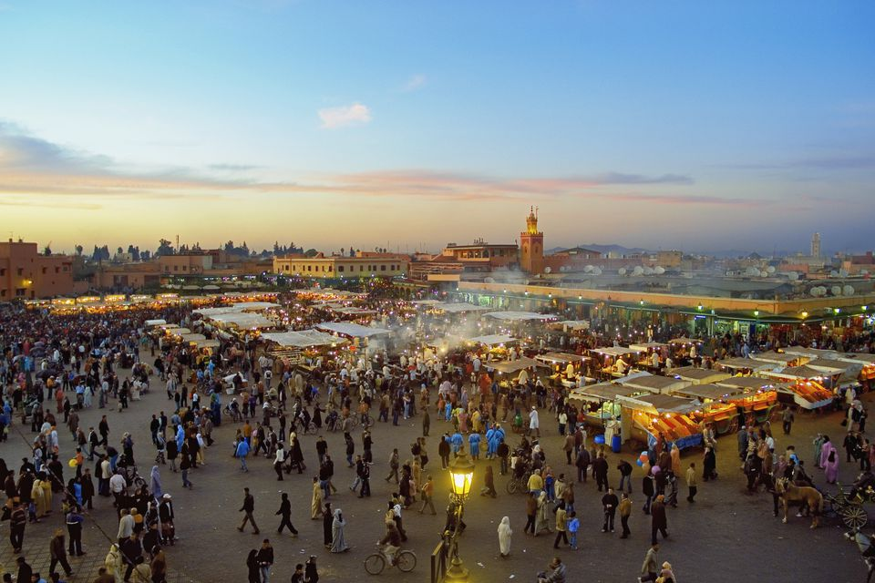
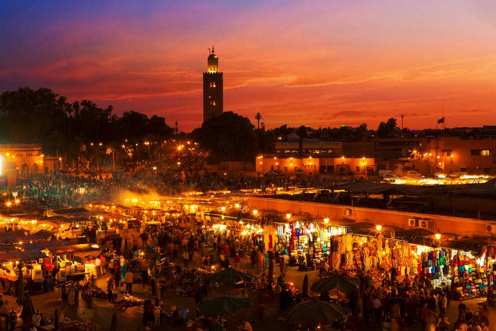
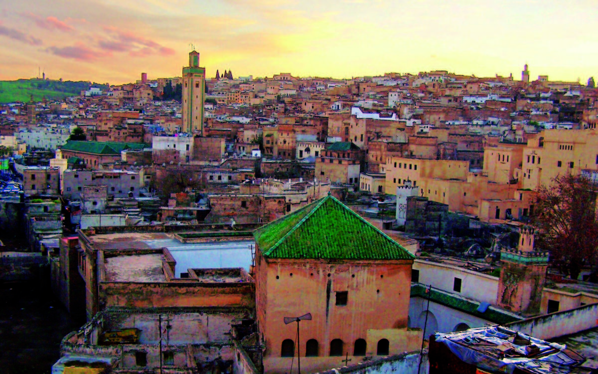

Nestled at the foot of the Atlas Mountains, Marrakesh is one of Morocco's four imperial cities. Not for the faint-hearted, it is a bustling metropolis filled with narrow streets, insistent hawkers and a myriad of sounds and smells.

It's also one of the most interesting cities in North Africa. Visitors come to Marrakesh to browse for treasures in the souks of the ancient medina, or to sample authentic Moroccan cuisine in the central square, Djemma El-Fna. Beautiful riads and serene hammams add to the experience, while the city's historic sights are well worth seeing. Start at the Saadian Tombs or El Badi Palace.
